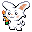
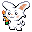
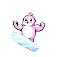
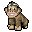
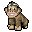
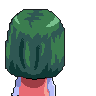
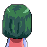

Okay so finalizing the stats for the next iteration. calc.moncha.in is the link for those interested.
Basically lets you edit/play around with stats, most importantly calculating the amount of damage you need to KO a mon. Will add more data to it as well later.
Next mons (in in particular order) will probably be:
好的。把首先的怪獸的數據和招式先描了一下。接下來要計算一下統計。
i feel like it'll be hard to do each mon at a time, so probably best to try and figure out:
Okay, let's talk specifics of some of the various mons and how I see them playing out. Reminder that monchain is supposed to play a lot like Pokemon, rewarding taking risks at the right time, as well as predictions.

 

This one was pretty easy to find a theme. It's the RNG mon, based off the gacha wheel found in Sofamon. Play style is a safe-ish pivot that can soak up damage and pull off occasional clip-worthy knockouts.
Stat spread: overall middling in everything. Balanced attack/defense, slightly higher HP than usual, slightly lower speed than usual.
Ability: Spin The Wheel
Every move has a 33% chance of refunding 1 stamina.
Moves
Rough philosophy is to have Sofabbi run at a slightly more efficient stamina economy, and the final heal move lets it benefit from that more than another mon. Main balancing question is probably needing to make its average moveset energy costs higher to offset.


Inutia borrows from Initia (hi Jennie). So we wanna lean into making it relatively nimble, but probably not very strong to balance it.
Stat spread: higher than average speed, lower than average on other areas. (Sort of glass cannon, except more like utility mon. Good suicide lead.)
Ability: need name
Something to benefit from swapping in and out, e.g. inflict a minor status debuff on the opponent when swapped in.
Moves
Is hazards + swap too strong of a combo? Maybe if it's predictable there should be some counterplay, will need to monitor in prod.

Man oh man. The ghouls. Ghouliath is also designed to be a weird tricky attacker. Mostly there to weather/tank hits that you can't deal with otherwise.
Stat spread: average stats, maybe slightly higher than average attack.
Ability: Rise From The Grave
An example of one of the cool things we can do w/ programmable mons. Once per game, if Ghouliath dies, it revives after 3 turns, with 1 HP. (Not sure if 1 HP debuff is needed to balance it out, as it effectively behaves like Disguise on Mimikyu and other free-turn moves, could also balance it out with lower stats, but we'll see)
Moves



It's a cute penguin. This and Gorillax are supposed to be easier to think about.
Stat spread: speedier/attack up, lower defenses.
Ability: idk yet
maybe something that rewards staying in / attacking which newer players will gravitate towards.
Moves
idk, need some boring/normal mons, need to think a bit more flavorfully, maybe something that incorporates the little pengus as well.

 

bored ape. need to lean into the zero brain mindset, risking it all for bonuses
Stat spread: higher attack/hp, lower on other stats.
Ability: idk yet
Need something simple, like basic HP regen every turn, or increasing defenses over time.
Moves
 


milady.
Stat spread: high speed/attack, low defenses.
Focus on weird status conditions, being "hacked", general lawlessness. Taunting or ways of restricting opponents works well. Probably a custom status condition.
Ability: Cursed
When KO'ed, inflict some nasty status on the attacker. Maybe sleep. That would suck.
Moves


Based off the weird Baseline happy face ghosts. IBLV personified.
End-game mon, designed to grow over time. Try to capture the feeling of being able to grow while leveraging existing growth to fill out the other attributes.
Stat spread: lower than average on everything (but will get stronger)
Ability: IBLV
tbd, something to do with regen maybe (eg healing up to X% of damage dealt, as long as Iblivion survives)
Moves
Okay so this is supposed to be a dev diary of sorts for monchain. Will do a longer write-up in the future for interested parties. Mostly am thinking about fleshing out the battle mechanics so people can try it out more at Denver. Also thinking about the prediction market / betting mechanisms. Noticed some small width issues when testing / copy-paste today so have to go fix those. Also paying attention to layouts / art inspiration from earlier 1980's style anime, as well as more recent gacha games. Will add some images and moodboard stuff later.
Mostly finishing the major archetypes for the mons. Also thinking a bit about the Saga series, should probably learn more about that. The main themes overall are letting players plan a few turns ahead, as well as risk/reward trade-offs.
Anyway if you haven't noticed, the blog name is a pun on the battle log.
Also thinking about some sort of monchain idiosyncratic explorer so users can better understand what the point of the on-chain nature is, and why it's interesting. That could be a cool thing in and of itself, so gotta avoid getting distracted.
End goal is still a cool enough game that can rope in communities. Everything else is in service of that for now.